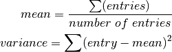

Growing a single Decision Tree¶
The basic principle of building decision trees is based on the implementation of decision trees in [Collective_Intelligence] by Toby Segaran.
Base Class¶
At the foundation of the ForestFire algorithm stands the decisionnode class. It represents a point in a DT at which the decision is made into which branch (true or false) to proceed. The whole tree is built up of nodes. Each node itself can contain two more nodes - the true and false branch - which are themselves decisionnodes. In this way a tree is constructed in which a set of data takes a certain path along the tree to get classified. At each node it either enters the true or the false branch. When a branch is reached with no further branches below, this is called a leaf node. The leaf node contains the results which represent the classification a data set receives. The results can be a single value - in this case the classification is 100% this single value. It can also consist of several values, e.g. value1 with 2 instances and value2 with 1 instance. The result of this classification is ambiguous, so it is expressed as a probability: the classification is 1/3 value2 and 2/3 value1.
Helper Functions¶
At each node two questions have to be answered:
- By which feature (=column) should the next decision be made?
- The feature that is chosen at the first node should be the one feature that separates the data set in the best possible way. Latter features are of less importance
- By which value should the decision be made?
To answer those questions the data is iteratively split in every possible way. This means it is split for every feature and within every feature it is split for every single value.
See divideset
Each of the resulting splits has to be evaluted with respect to “how well” the split separates the big list into two smaller lists. For this three evaluation metrics can be chosen from:
- Gini Impurity
- “Probability that a randomly placed item will be in the wrong category”
- Entropy
- “How mixed is a list”
- Variance
- “How far apart do the numbers lie”
The evaluation metric returns the gini coefficient / entropy / variance of the list that it is presented with. Both methods need information about how many unique elements are in one list. See uniquecounts.
After a tree is built its width and depth can be examined by getdepth and getwidth. A tree’s depth is the maximum number of decisions that can be made before reaching a leaf node plus 1 (A tree stump that has no branches by definition still has a depth of 1). A tree’s width is the number of leaves it contains, i.e. number of nodes that have entries in their results property.
Building a tree¶
Starting with a root node and the whole provided data set the buildtree function recursively loops through the following steps and builds up the tree structure:
- create a decisionnode
- calculate score (entropy / gini coefficient / variance) of current list
- divide list into every possible split
- evaluate each split according to evaluation metric
- split the list into true and false branches according to best evaluated split
- If no split is better than the current list no split is performed and results are stored, tree is returned
- If true and false branches are created, start at 1.
An example tree can look like this. The first node checks if the value of the third column is >= 21. If yes it continues to the right and checks column 0 if the value is equal to ‘slashdot’. If yes the prediction for the new data set will be 50% None and 50% Premium since both values have appeared 1 time during trainging/building of the tree.
If the value of column 0 is instead not equal to ‘slashdot’, there is another query at the next node for colum 0 wether it is equal to ‘google’ and so on.
{kind=link}
Pruning a tree¶
At the deeper levels of a tree there might be splits that further reduce the entropy / gini coefficient / variance of the data, but only to a minor degree. These further splits are not productive since they make the tree more complex but yield only small improvements. There are two ways of tackling this problem.
One is to stop splitting the data if the split does not produce a significant reduction in entropy / gini coefficient / variance. The danger in doing this is that there is a possibility that at an even later split there might be a significant reduction, but the algorithm can not forsee this. This would lead to an premature stop.
The better way of dealing with the subject of overly complex trees is pruning. The pruning approach builds up the whole complex tree and then starts from its leaves going up. It takes a look at the information gain that is made by the preceding split. If the gain is lower than a threshold specified by the pruning hyperparameter in Execution it will reunite the two leaves into one single leaf. This way no meaningful splits are abandoned but complexity can be reduced
In the above example tree the rightmost leaf is the only place where pruning might have hapenned. Before pruning ‘None’ and ‘Premium’ could have been located in separate leaves. If the information gain from splitting the two was below the defined threshold, those two leaves would get pruned into one single leaf. Still, only by looking at the finished tree one cannot tell if the tree was pruned or if it has been built this way (meaning that already during building there was no benefit in creating another split).
Warning
By default pruning is disabled (set to 0). A reasonable value for pruning depends on the raw data. Observe the output for “wrongs” on the console. By default it should be quite small (<10% of the total number of trees at most). Try a value for pruning between 0 and 1 and only increase above 1 if the “wrongs” output does not get too big.
A “wrong” tree is a tree “stump” consisting of only one node. Such a tree has no informational benefit.
Being an advanced hyperparameter pruning can greatly improve overall results as well as the number of runs it takes to find a good result. But it also increases the risk of getting stuck in a local extremum or ending up with a lot of tree ‘stumps’ that are useless for further information retrieval.
Classifying new observations¶
After a DT is built new observations can be classified. This process can vividly be explained by starting at the top node and asking a simple yes or no question about the corresponding feature and value that is stored in the node. If the answer for the new observastion is yes, the path follows the true branch of the node. In case of a negated answer the false branch is pursued.
See Tree Image as an example. Visually the true branch is on the right hand side of the parent node, the false branch on the left.
The classification of new data is done with the help of the classify function.
Note
classify is also able to handle missing data entries. In this case both branches are followed and the result is weighted according to the number of entries they contain. Since the ForestFire algorithm produces its own database from the raw data and the underlying MLA it is made sure that there are always entries present and the case of missing entries does not come to pass.
Visualizing a tree¶
The following functions are for debugging purposes only.
The structure of the tree can be output to the console with the help of printtree.
An image of the tree can be created with the drawtree function. It makes use of drawnode.
Storing the tree structure¶
To grow a Random Forest from single Decision Trees there must be a way to store whole trees and their structure in an array. Unlike printtree and drawtree where the tree is printed / drawn recursively by looping through the nodes.
This is done with the help of path_gen and path_gen2. By examining the last column of the path matrix that is returned by path_gen all results of the different leaf nodes can be reached.
Another usefull function is check_path. It takes as input a tree and a result (typically extracted from a path matrix) and checks wether the result is in that tree. This way it is possible to move along the branches of a tree and at each node check if it (still) contains a certain result, e.g. the best result of the whole tree. This is used for determining the importance of features in the following chapter about growing a Random Forest
Important
Functions used in this chapter
-
class
ForestFire.Main.decisionnode(col=-1, value=None, results=None, tb=None, fb=None)[source]¶ Base class that a decision tree is built of.
- Keyword Arguments:
- col {integer} – column number = decision criterium for splitting data (default: {-1})
- value {integer/float/string} – value by which data gets split (default: {None})
- results {integer/float/string} – if node is an end node (=leaf) it contains the results (default: {None})
- tb {decisionnode} – next smaller node containing the true branch (default: {None})
- fb {decisionnode} – next smaller node containing the false branch (default: {None})
-
ForestFire.Main.divideset(rows, column, value)[source]¶ splits a data set into two separate sets according to the column and the value that is passed into.
If value is a number the comparison is done with <= and >=. If value is not a number the exact value is compared
- Arguments:
- rows {list} – data set that is split
- column{integer} – column by which data gets split
- value {number/string} – value by which data gets split
- Returns:
- [list] – two lists
-
ForestFire.Main.giniimpurity(rows)[source]¶ Probability that a randomly placed item will be in the wrong category
Calculates the probability of each possible outcome by dividing the number of times that outcome occurs by the total number of rows in the set. It then adds up the products of all these probabilities. This gives the overall chance that a row would be randomly assigned to the wrong outcome. The higher this probability, the worse the split.
- Returns:
- float – probability of being in the wrong category
-
ForestFire.Main.entropy(rows)[source]¶ Entropy is the sum of p(x)log(p(x)) across all the different possible results –> how mixed is a list
Funciton calculates the frequency of each item (the number of times it appears divided by the total number of rows) and applies these formulas:
The higher the entropy, the worse the split.
- Arguments:
- rows {list} – list to evaluate
- Returns:
- [float] – entropy of the list
-
ForestFire.Main.variance(rows)[source]¶ Evaluates how close together numerical values lie
Calculates mean and variance for given list

- Arguments:
- rows {list} – list to evaluate
- Returns:
- number – variance of the list
-
ForestFire.Main.uniquecounts(rows)[source]¶ evaluate how many unique elements are in a given list
- Arguments:
- rows {list} – evaluated list
- Returns:
- integer – number of unique elements
-
ForestFire.Main.getdepth(tree)[source]¶ returns the maximum number of consecutive nodes
- Arguments:
- tree {decisionnode} – tree to examine
- Returns:
- number – maximum number of consecutive nodes
-
ForestFire.Main.getwidth(tree)[source]¶ returns the number of leaves = endnodes in the tree
- Arguments:
- tree {decisionnode} – tree to examine
- Returns:
- number – number of endnodes
-
ForestFire.Main.buildtree(rows, scoref)[source]¶ recursively builds decisionnode objects that form a decision tree
At each node the best possible split is calculated (depending on the evaluation metric). If no further split is neccessary the remaining items and their number of occurence are written in the results property.
- Arguments:
- rows {list} – dataset from which to build the tree scoref {function} – evaluation metric (entropy / gini coefficient)
- Returns:
- decisionnode – either two decisionnodes for true and false branch or one decisionnode with results (leaf node)
-
ForestFire.Main.prune(tree, mingain)[source]¶ prunes the leaves of a tree in order to reduce complexity
By looking at the information gain that is achieved by splitting data further and further and checking if it is above the mingain threshold, neighbouring leaves can be collapsed to a single leaf.
- Arguments:
- tree {decisionnode} – tree that gets pruned mingain {number} – threshold for pruning
-
ForestFire.Main.printtree(tree, indent=' ')[source]¶ prints out the tree on the command line
- Arguments:
- tree {decisionnode} – tree that gets printed
-
ForestFire.Main.drawtree(tree, jpeg='tree.jpg')[source]¶ visualization of the tree in a jpeg
- Arguments:
- tree {decisionnode} – tree to draw
- Keyword Arguments:
- jpeg {str} – Name of the .jpg (default: {‘tree.jpg’})
-
ForestFire.Main.drawnode(draw, tree, x, y)[source]¶ Helper Function for drawtree, draws a single node
- Arguments:
- draw {img} – node to be drawn tree {decisionnode} – tree that the node belongs to x {number} – x location y {number} – y location
-
ForestFire.Main.classify(observation, tree)[source]¶ takes a new data set that gets classified and the tree that determines the classification and returns the estimated result.
- Arguments:
- observation {numpy.array} – the new data set that gets classified, e.g. test data set tree {decisionnode} – tree that observation gets classified in
- Returns:
- data – expected result
-
ForestFire.Main.path_gen(tree)[source]¶ Create a path Matrix which contains the structure of the tree. Calls path_gen2 to do so.
- Arguments:
- tree {decisionnode} – tree of which the data structure is stored
- Returns:
- numpy.array – data structure of the tree, NaN means there is no more branch
-
ForestFire.Main.path_gen2(tree, width, depth, path, z2, z1)[source]¶ Create a path Matrix which contains the structure of the tree.
creates a matrix ‘path’ that represents the structure of the tree and the decisions made at each node, last column contains the average MSE at that leaf the sooner a feature gets chosen as a split feature the more important it is (the farther on the left it appears in path matrix) order that leaves are written in (top to bottom): function will crawl to the rightmost leaf first (positive side), then jump back up one level and move one step to the left (loop)
- Arguments:
- tree {decisionnode} – tree of which the data structure is stored width {int} – width of the tree depth {int} – depth of the tree path {[type]} – current path matrix, gets updated during function calls z2 {int} – control variable for current depth z1 {int} – control variable for current width
- Returns:
- numpy.array – the structure of the tree